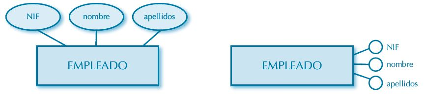
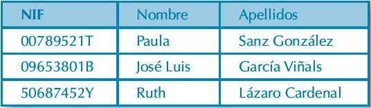
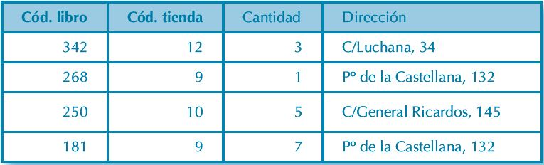
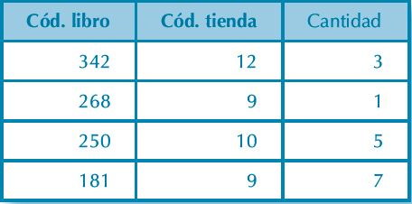
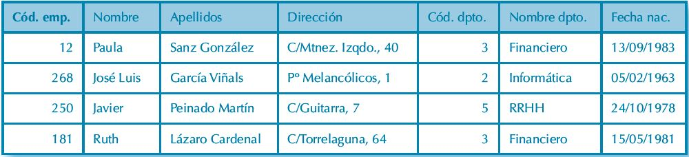

Diseño de los modelos entidad-relación y relacional de base de datos
Base de Datos
En 1597 sir Francis Bacon acuñó la conocida frase "Knowledge itself is a power"", adaptada generalmente
al castellano como "La información es poder". Hoy en día la información es el activo más valioso de toda organización,
y las bases de datos son la respuesta a las necesidades técnicas surgidas hace unas
décadas.
Una base de datos es un conjunto de información organizada de forma lógica, de tal manera que es
posible extraer toda la información o una parte de ella en cualquier momento. Las bases de datos
tienen importantes aplicaciones en la administración de empresas e instituciones públicas.
Algunas de sus aplicaciones representativas son:
- Banca:
Para información de los clientes, cuentas, préstamos y transacciones bancarias
- Líneas aéreas:
Para reservas e información de horarios. Las líneas aéreas fueron de las primeras en
usar las bases de datos de forma distribuida geográficamente
- Universidades:
Para información de los estudiantes, matrículas en las asignaturas y cursos.
- Transacciones de tarjetas de crédito:
Para compras con tarjeta de crédito y
la generación de los extractos mensuales
- Telecomunicaciones:
Para guardar un registro de las llamadas realizadas, generar
las facturas mensuales, mantener el saldo de las tarjetas telefónicas de prepago y
para almacenar información sobre las redes de comunicaciones.
- Finanzas:
Para almacenar información sobre compañías tenedoras, ventas y
compras de productos financieros, como acciones y bonos; también para almacenar
datos del mercado en tiempo real para permitir a los clientes la compraventa en línea
y a la compañía la compraventa automática.
- Ventas:
Para información de clientes, productos y compras
- Comercio en línea:
para los datos de ventas ya mencionados y para el seguimiento de los pedidos
Web, generación de listas de recomendaciones y mantenimiento de evaluaciones de productos
en línea
- Producción:
Para la gestión de la cadena de proveedores y para el seguimiento de la producción
de artículos en las factorías, inventarios en los almacenes y pedidos.
- Recursos humanos:
Para información sobre los empleados, salarios, impuestos sobre los sueldos y
prestaciones sociales, y para la generación de las nóminas
Importante: Las bases de datos forman una parte esencial de casi todas las empresas actuales.
Las bases de datos requieren de un software que permita la administración de dicha base de datos.
Estos programas especializados sirven como interfaz para que los usuarios puedan administrar como
se estructura y optimiza toda la información recopilada.
Sistema Gestor de Base de Datos (SGBD)
Se le llama sistema gestor de bases de datos ( SGBD aunque se suele
utilizar más a menudo las siglas DBMS procedentes del inglés, Data Base Management System) a
una colección de datos interrelacionados y un conjunto de programas para acceder a dichos datos.
El objetivo principal de un SGBD es proporcionar una forma de almacenar y recuperar la información de una base
de datos de manera que sea tanto práctica como eficiente.
Los sistemas de bases de datos se diseñan para gestionar grandes cantidades de información
de tal manera que se garantiza la fiabilidad de la información almacenada, a pesar de las caídas del sistema o
de los intentos de acceso no autorizados. Si los datos van a ser compartidos entre diferentes usuarios, el
sistema debe evitar posibles resultados anómalos.
Entre los sistemas gestores de bases de datos (SGBD) más conocidos se encuentran: Microsoft Access y MySQL.
Bases de datos VS hojas de calculo
Las bases de datos y las hojas de cálculo son herramientas útiles para almacenar
información. Las principales diferencias entre ambas son:
- La forma de manipular y guardar la información.
- La cantidad de datos que se pueden almacenar
- La accesibilidad a esos datos almacenados.
Las hojas de cálculo desde sus comienzos fueron diseñadas para un usuario. Son
excelentes para uno o un pequeño número de usuarios que no necesitan utilizar un
gran volumen de datos.
Las bases de datos, por otro lado, fueron creadas para almacenar gran cantidad
de información organizada, permite acceder y consultar los datos de forma rápida
y segura a muchos usuarios al mismo tiempo.
Cuando diseñamos una base de datos, debemos
tomar en cuenta las siguientes aspectos:
- Trate de planificar para el futuro e incluya todos los datos que probablemente necesite.
- Tenga un campo separado para cada división de los datos que anticipe necesitar.
- Evite almacenar campos calculados
Recuerda: Una base de datos bien diseñada no solo ayuda a garantizar la integridad de los datos,
sino que es más fácil de mantener y actualizar.
Modelo entidad-relación
También conocido como diagrama o modelo E-R o E/R. El diagrama entidad/relación
es una técnica cuyo objetivo es la representación y definición de todos los datos que se introducen,
almacenan, transforman y producen dentro de un sistema de información, sin tener en cuenta
las necesidades de la tecnología existente, ni otras restricciones.
El Diagrama E-R dará solución al problema planteado sin importar cuál sea el SGBD comercial que se
vaya a utilizar. Para ello parte de una serie de conceptos que se describen a continuación:
Entidad
Una entidad es cualquier objeto real o abstracto que tiene existencia por sí mismo y se puede
identificar de una forma clara y precisa, y del cual se desea registrar información en el sistema.
Es el elemento fundamental que hay que caracterizar.
Se representa con sustantivos en singular
que encierran un concepto, y es labor del analista identificar dichos sustantivos.
Ejemplos Los siguientes son ejemplos de entidad:
- "Empleado",
- "Cliente",
- "Factura",
- "Línea de factura",
- "Proveedor".
Cada elemento concreto de una entidad es una ocurrencia.
En el ejemplo de la entidad “Empleado”, cada uno de los empleados es una ocurrencia de dicha
entidad. A su vez, cada ocurrencia presenta una serie de datos asociados:
Un empleado tendrá nombre, apellidos, NIF, dirección postal, número de teléfono, etc.
Cada uno de esos datos es un atributo, y cada ocurrencia tiene distintos valores para cada atributo.
En la entidad “Empleado”, un empleado concreto tendrá “Juan Antonio” como valor de su atributo “Nombre”, “García Corredor”
como valor de su atributo “Apellidos” y “52874660Y” como valor de su atributo “NIF”.
Toda entidad debe cumplir dos características:
- Presencia del mismo conjunto de atributos para todas las ocurrencias, independientemente
de que alguna ocurrencia carezca de valor para algún atributo.
- Diferenciación unívoca de ocurrencias. No puede haber dos ocurrencias con los mismos
valores para todos sus atributos.
Representación gráfica de una entidad
La representación gráfica de una entidad consiste en un rectángulo con el nombre de la entidad
en su interior, generalmente en mayúsculas. Los atributos asociados a una entidad se pueden
representar de dos formas:
- Mediante óvalos que incluyen el nombre del atributo,
- Mediante círculos con el nombre del atributo en el exterior.

Hay dos tipos de entidades:
- Fuerte o regular. No depende de otra. Corresponde a la inmensa mayoría de las entidades.
- Débil. La existencia de sus ocurrencias depende de la existencia de ocurrencias en otras
entidades.
Ejemplo: Consideremos un sistema de información de una biblioteca. Si queremos llevar un control sobre
las multas impuestas a los socios por devolución tardía de libros, crearemos una entidad “Multa”.
Toda multa se impone a un socio; por tanto, no podrá haber ocurrencias en la entidad “Multa” si
no existe una ocurrencia correspondiente a un socio en la entidad “Socio”.
Para que una entidad sea débil tiene que serlo respecto a todas las entidades con las que se relaciona.
Las entidades débiles se representan mediante un doble rectángulo:
Relación
Una relación es una asociación o vínculo entre ocurrencias de varias entidades. Se nombran
con expresiones verbales.
Ejemplos de relaciones serían la existente entre las ocurrencias de la
entidad “Cliente” y las de la entidad “Factura” (ya que toda factura corresponde a un cliente),
y a la que podríamos llamar “genera” (se leería “cliente genera factura”).
Representacón gráfica de una relación
La representación gráfica de una relación consiste en un rombo rodeando su nombre:
Clasificación de relaciones
De acuerdo al número de entidades cuyas ocurrencias relacionan, podemos dividir las relaciones
en varias categorías:
- Binarias. Relacionan entre sí ocurrencias de dos entidades.
Ejemplo:
En el ejemplo anterior, la relación "genera" entre “Cliente” y “Factura” representa una relacion binaria y
gráficamente se representa como:
- Ternarias. Relacionan entre sí ocurrencias de tres entidades.
Ejemplo: Consideremos un sistema de información correspondiente a un centro de enseñanza.
Cada profesor imparte una serie de asignaturas a distintos grupos de alumnos. Si
disponemos de las entidades “Profesor”, “Grupo” y “Asignatura”, tendríamos que relacionar
sus ocurrencias mediante la siguiente relación ternaria:
- N-arias. Dependiendo de la complejidad de nuestro modelo de datos podemos relacionar
ocurrencias de más de tres entidades.
Ejemplo:
Supongamos que en la relación del ejemplo anterior
sea necesario, además, indicar en qué aula se imparte cada asignatura a cada grupo:
Como criterio de diseño se identifican relaciones ternarias o n-arias cuando la acción
identificada por la relación afecta de forma simultánea a las ocurrencias de todas las entidades
relacionadas (un profesor imparte una asignatura a un grupo en un aula en un
momento concreto, por lo que existe simultaneidad temporal).
- Reflexivas. Relacionan entre sí ocurrencias de la misma entidad. Para comprenderlas correctamente
hay que tener en cuenta que las ocurrencias que relacionan, aun perteneciendo
a la misma entidad, están jugando papeles distintos.
Ejemplo Consideremos una entidad “Empleado” que almacena
ocurrencias de empleados de una empresa. Hay empleados que son jefes de otros, y todos
los empleados figuran como ocurrencias de la entidad “Empleado”. En este caso, debemos
relacionar ocurrencias de “Empleado” correspondientes a empleados que tienen jefe con
ocurrencias de “Empleado” correspondientes a empleados que son jefes de otros:
Cardinalidad y modalidad
Para dotar de contenido semántico a una relación hay que especificar de qué modo se relacionan
entre sí las ocurrencias de las distintas entidades, estableciendo ámbitos, límites y restricciones.
Cardinalidad
La cardinalidad (también llamada tipo de correspondencia por algunos autores) indica el número máximo
de ocurrencias de una entidad con las que se puede relacionar una ocurrencia de otra entidad.
Ejemplos:
- Toda factura deba emitirse a nombre de un
solo cliente, pero que cada cliente pueda emitir muchas facturas,
- Cada proveedor suministre varios artículos y que cada artículo sea suministrado por varios
proveedores,
- Cada empleado se siente en una ubicación concreta de la oficina y a cada ubicación corresponda
solamente un empleado.
La cardinalidad refleja estos casos del siguiente modo:
- 1:N (uno a ene/uno a muchos). Una ocurrencia de una entidad puede relacionarse con
varias de otra entidad, pero cada ocurrencia de la segunda entidad solo puede relacionarse
con una única ocurrencia de la primera entidad.
Ejemplo: Supongamos una empresa donde cada empleado pertenece a un departamento y en
cada departamento puede haber varios empleados. Esta sería la representación gráfica:
- M:N (eme a ene/muchos a muchos). Cada ocurrencia de una entidad puede relacionarse
con varias de otra entidad, y cada ocurrencia de la segunda entidad también puede relacionarse
con varias de la primera.
Ejemplo: Si en nuestro sistema de información un músico puede tocar varios instrumentos y
un instrumento puede ser tocado por varios músicos:
- 1:1 (uno a uno). Una ocurrencia de una entidad se relaciona con otra ocurrencia de otra
entidad y viceversa.
Ejemplo: Una consultora financiera podría asignar a cada cliente una única cartera de inversión
propia:
Modalidad
La cardinalidad delimita los límites superiores de una relación, pero no define su obligatoriedad.
¿Todo instrumento debe ser tocado por algún músico? ¿Podría haber alguna ocurrencia
en la entidad “Instrumento” que no tuviera relación con otra ocurrencia en la entidad “Músico”?
Puede que, como requisito del sistema de información, la entidad “Instrumento” deba contener
una lista de instrumentos independientemente de que haya algún músico que los toque (quizás
una de las ocurrencias de “Instrumento” corresponda al acordeón y, en cambio, en “Músico”
no haya ninguna ocurrencia correspondiente a un músico que toque el acordeón). Pero también
puede que el sistema de información exija que las ocurrencias de “Instrumento” se carguen a
medida que se introduzcan en “Músico” ocurrencias de músicos, de modo que todos los instrumentos
tendrían su correspondencia con, al menos, un músico. Obviamente, las dos situaciones
son incompatibles en un buen diseño de datos, y la cardinalidad no nos aporta la
información necesaria para solventar esta disyuntiva.
La modalidad (llamada por algunos autores cardinalidad, con la consiguiente confusión) define
el número mínimo y máximo de ocurrencias de una entidad que pueden estar relacionadas con
una ocurrencia de otra u otras entidades, identificando relaciones optativas (en las que no tiene
por qué haber correspondencia).
La modalidad se indica a ambos lados de la relación, y su valor
máximo coincide con el valor de la cardinalidad correspondiente al lado de la relación en el
que nos encontremos.
Puede ser de los siguientes tipos:
- 0..1 (cero a uno). Cada ocurrencia de la primera entidad puede relacionarse con una
ocurrencia de la segunda entidad o no. No puede relacionarse con varias.
- 1..1 (uno a uno). Cada ocurrencia de la primera entidad debe relacionarse obligatoriamente
con una y solo una ocurrencia de la segunda entidad.
- 1..N (uno a ene/uno a muchos). Cada ocurrencia de la primera entidad debe relacionarse
obligatoriamente con al menos una ocurrencia de la segunda entidad. Puede relacionarse
con varias.
- 0..N (cero a ene/cero a muchos). Cada ocurrencia de la primera entidad no tiene limitada
su relación con ocurrencias de la segunda entidad. Puede relacionarse con una, varias
o ninguna.
Ejemplo: Veamos el siguiente ejemplo, correspondiente a un concesionario de automóviles:
Para cada entidad de la relación debemos leer su modalidad en el lado opuesto. En este caso, la modalidad de “Cliente” con respecto a “Automóvil” es de 0..N,
y la de “Automóvil” con respecto a “Cliente” es de 0..1. Esta relación “compra” se leería del siguiente modo:
- Toda ocurrencia de “Cliente” puede relacionarse con varias ocurrencias de “Automóvil”,
con una o con ninguna (en lenguaje natural: un cliente puede no comprar, comprar un
automóvil o comprar varios automóviles).
- Toda ocurrencia de “Automóvil” puede relacionarse con una sola ocurrencia de
“Cliente” o no (un automóvil puede ser vendido a un solo cliente, o bien no ser vendido;
en cualquier caso, el mismo automóvil no puede ser vendido a varios clientes).
Atributos de relación
En algunas ocasiones, ciertas propiedades o características susceptibles de constituir un atributo
afectan a más de una entidad
Retomando uno de los ejemplos previos: Es fácil identificar posibles
atributos de la entidad “Socio” (“NIF”, “Nombre”, “Apellidos”, “Dirección”, “Teléfono”, “Fecha
de nacimiento”, “Fecha de alta”) y de la entidad “Libro” (“Signatura”, “Título”, “Autor”, “Editorial”,
“Año de publicación”). No obstante, un dato importante que el sistema debe registrar
es la fecha del préstamo. No puede figurar como atributo de “Socio”, porque impediría que un
socio pudiera tomar más de un libro en préstamo, y no puede figurar como atributo de “Libro”
porque impediría que un libro fuera prestado más de una vez. Afecta a ocurrencias de ambas
entidades, por lo que debe figurar en la relación:
Clave primaria y claves candidatas
En toda entidad hay al menos un atributo o conjunto de atributos cuyos valores identifican de
forma unívoca a cada una de las ocurrencias. Observemos el siguiente ejemplo:
Si queremos elegir un conjunto de atributos que identifiquen de forma única a cada empleado,
podemos pensar en la combinación de “Nombre” y “Apellidos”, pero presenta un gran problema:
no garantiza la unicidad (puede haber dos empleados llamados “Juan Pérez García”).
Si seguimos buscando entre la lista de atributos, veremos tres posibles opciones: “Código de empleado”, “NIF” y
“Número de la Seguridad Social”. Cada uno de los tres sirve para identificar a cada ocurrencia de
forma única e inconfundible (no puede haber dos empleados con el mismo NIF, ni con el mismo
número de la Seguridad Social, ni con el mismo código de empleado, suponiendo que dicho código
haya sido definido de forma única).
Esos tres atributos son llamados claves candidatas, y el que elijamos
para identificar a las ocurrencias de la entidad será la clave primaria (primary key).
Por motivos de rendimiento de la base de datos resultante, se recomienda elegir la clave primaria
más pequeña posible.
En un diagrama entidad/relación las claves primarias se representan subrayando el nombre
del atributo si se ha optado por dibujar los atributos en el interior de un óvalo, u oscureciendo
el círculo si se ha decidido utilizar el otro tipo de representación gráfica.
Supongamos que hemos elegido “NIF” como clave primaria:
Clave primaria compuesta
A veces un solo atributo no es suficiente para identificar de forma unívoca todas las ocurrencias
de una entidad, por lo que hay que construir una clave primaria que incluya los valores
de varios atributos en el orden especificado, es decir, una clave primaria compuesta.
Ejemplo: En el siguiente ejemplo, la entidad “Cuenta bancaria” necesita cuatro atributos para definir su clave primaria,
ya que cada uno de ellos es susceptible de repetir valores en distintas ocurrencias:
Ejemplo de diagrama entidad/relación
Se ha de definir el modelo de datos de una biblioteca con las siguientes restricciones básicas:
- Cada libro registrado cuenta con varios ejemplares físicos.
- Todo libro corresponde a una o varias temáticas, está escrito por uno o varios autores y
publicado por una sola editorial.
- Los ejemplares se prestan a los socios. Hay que guardar la fecha de préstamo.
- Es necesario almacenar la nacionalidad o nacionalidades de cada autor, así como el país
donde cada editorial tiene su sede principal.
A pesar de que falta mucha información sobre los requisitos de la aplicación, el siguiente
diagrama cumple con las restricciones expuestas:s
Modelo relacional
Definido por Edgar F. Codd en el IBM Research Center de San José (California) en 1970, el
modelo relacional buscaba una solución a los problemas derivados de la rigidez estructural de
las bases de datos jerárquicas y en red imperantes en la época. Presentado en sólidos términos
matemáticos, independiza los datos de su tratamiento.
Relación
El elemento básico del modelo relacional es la relación, una estructura bidimensional que representa
las entidades y algunas relaciones del diagrama entidad-relación. Las filas de una relación,
llamadas tuplas, corresponden a las ocurrencias; cada tupla cuenta con una serie de atributos,
cada uno de ellos con un valor. Vemos como ejemplo la relación “Socio”:
Dominio
Se le llama dominio de un atributo al conjunto de valores que puede tomar para una ocurrencia
concreta. Aunque de acuerdo a la definición teórica del modelo relacional cada dominio
corresponde exclusivamente a los valores posibles (es decir, el dominio del atributo “Apellidos”
es el conjunto de apellidos de los socios), la idea de dominio típicamente se asocia con la de tipo
de datos (es decir, el conjunto de combinaciones de datos que podría constituir un dominio, de
modo que desde un punto de vista técnico cualquier combinación de caracteres alfanuméricos,
aunque no tenga sentido, podría representar los apellidos de un socio). Se identifican los siguientes
tipos de datos base:
- Números enteros.
- Números decimales.
- Cadenas de caracteres.
- Fechas y horas.
- Valores lógicos (verdadero o falso).
- Objetos (ficheros binarios).
También se pueden definir conjuntos de valores a medida. Un ejemplo sería un atributo
“día de la semana”, cuyos posibles valores fueran los contenidos en el conjunto {“lunes”, “martes”,
“miércoles”, “jueves”, “viernes”, “sábado”, “domingo”}.
Hay un valor especial que constituye un tipo por sí mismo: el valor nulo o NULL, que representa
ausencia de valor. No se debe confundir con el valor vacío (“” en un campo de tipo
cadena de caracteres, o 0 en un campo numérico).
Normalización
También a Codd se debe la definición de una serie de normas cuya aplicación elimina las redundancias
de información en una solución relacional. La técnica es conocida como normalización,
y consiste en llevar todas las relaciones a determinados estados llamados formas normales.
A continuación se describen dichas formas normales y cómo se llega hasta ellas.
Primera forma normal (1FN)
Una relación está en primera forma normal (1FN) si todos sus valores son atómicos, es decir,
cada valor de los dominios de todos los atributos es único. En el siguiente ejemplo (clave primaria
en negrita) vemos un atributo, “Teléfono”, cuyos valores no son atómicos, sino repetitivos:
Una primera solución para alcanzar la 1FN consiste en atomizar el atributo “Teléfono”, del
siguiente modo:
Esta solución implica una fuerte redundancia (“Nombre” y “Apellidos” se repiten por cada
teléfono), e invalida a “NIF” como clave primaria, obligando a ampliar dicha clave primaria con
el atributo “Teléfono”. Por ese motivo se propone una solución más elaborada consistente en
dividir la relación original en dos (una con las personas y otra con los teléfonos), vinculándolas
mediante los valores de la clave primaria original:

La 1FN es parte de la definición del modelo relacional, por lo que su cumplimiento es
obligatorio.
Segunda forma normal (2FN)
Una relación está en segunda forma normal (2FN) si cumple las siguientes reglas:
- Está en 1FN.
- Todos los atributos que no forman parte de la clave primaria dependen de ella por completo.
La relación siguiente ilustra el stock de una librería. La clave primaria está compuesta por
dos atributos (“Código de libro” y “Código de tienda”), pero el atributo “Dirección” no depende
de toda la clave, sino únicamente del atributo “Código de tienda”. Por ese motivo se repite la
dirección de la tienda 9, con la consiguiente redundancia de información:

En este caso, el proceso de normalización obliga a dividir la relación en dos, una con la información
de la tienda y otra con la del stock:

Nótese que la 2FN solo se puede violar si la clave primaria está compuesta por más de un
atributo, por lo que toda relación en 1FN cuya clave primaria esté formada por un solo atributo
también está en 2FN.
Tercera forma normal (3FN)
Una relación está en tercera forma normal (3FN) si cumple las siguientes reglas:
- Está en 2FN.
- Todos los atributos que no forman parte de la clave primaria son independientes entre
sí, es decir, no dan información sobre otros atributos de la relación.
El siguiente ejemplo ilustra una relación con información sobre empleados. Todos los atributos
dependen directamente de la clave primaria (“Código de empleado”) excepto “Nombre
de departamento”, que depende de “Código de departamento”:

La información sobre el departamento constituirá una nueva relación:
Paso del DER al modelo físico de datos
El objetivo del diagrama entidad-relación y las técnicas de normalización es proporcionar el
mejor diseño posible para una futura base de datos. En una implementación relacional la información
se almacena en forma de tablas con campos y registros, a modo de las relaciones, los atributos
y las tuplas del modelo relacional (coincidentes, a su vez, con las entidades y relaciones,
los atributos y las ocurrencias del diagrama entidad-relación).
Se muestra la tabla TSocio, resultante de la relación “Socio” vista anteriormente:
Nomenclatura
A partir de este momento vamos a definir una nomenclatura común a todos los elementos de
modelo físico y base de datos referidos. Para ello se usará como punto de partida la notación
húngara, definida en los años 70 por Charles Simonyi, programador húngaro de Xerox. Simonyi
estableció unas reglas de nominación de variables que aportaba información sobre su ámbito y
tipo de datos. Centrada originalmente en código fuente de programación, se presenta a continuación
una adaptación reducida de la notación húngara a los nombres de elementos de una
base de datos relacional, según los siguientes criterios:
A pesar de que esta nomenclatura puede resultar insuficiente en el entorno de trabajo de
un SGBD real, nos servirá como marco de referencia común para los ejemplos de este texto.
Queda a discreción del lector ampliarla y/o adaptarla como convenga a sus necesidades.
Reglas de transformación
Se propone la siguiente representación gráfica de modelo físico de datos:
- Las tablas se representan como un rectángulo con el nombre de la tabla en la parte superior
y la lista de campos en la inferior. Los campos que conformen la clave primaria
irán subrayados y en orden:
- La modalidad irá implícita en la terminación de las líneas que relacionan tablas, del siguiente
modo:
En algunos casos, las relaciones generan tablas (se verá en breve). A la hora de dar nombre a
dichas tablas se pueden seguir dos criterios:
- Utilizar un sustantivo que represente la acción implícita en la relación (“cliente contrata
servicio” generaría una tabla TContrato, “usuario compra producto” generaría TCompra).
- Concatenar los nombres de las entidades relacionadas (“profesor imparte asignatura” generaría
TProfesorAsignatura).
La transformación de componentes del diagrama entidad-relación en elementos del modelo
físico de datos sigue las siguientes reglas:
- Toda entidad se convierte en una tabla.
- Todo atributo pasa a ser un campo. Los atributos marcados como parte de la clave primaria
se convierten en campos de la clave primaria de la nueva tabla, conservando su
orden.
- Las relaciones presentan una casuística basada en su cardinalidad. Uno de los objetivos
fundamentales a la hora de diseñar una base de datos es evitar la proliferación de valores
nulos:
- Relaciones M:N, ternarias y n-arias. Se convierten en tabla. Su clave primaria será la
concatenación de las claves primarias de las entidades que relacionan.
EL MODELO RELACIONAL. NORMALIZACIÓN
CAPÍTULO
Modelo relacional
Definido por Edgar F. Codd en el IBM Research Center de San José (California) en 1970, el
modelo relacional buscaba una solución a los problemas derivados de la rigidez estructural de
las bases de datos jerárquicas y en red imperantes en la época. Presentado en sólidos términos
matemáticos, independiza los datos de su tratamiento.
Definición
El elemento básico del modelo relacional es la relación, una estructura bidimensional que representa
las entidades y algunas relaciones del diagrama entidad-relación. Las filas de una relación,
llamadas tuplas, corresponden a las ocurrencias; cada tupla cuenta con una serie de atributos,
cada uno de ellos con un valor. Vemos como ejemplo la relación “Socio”:
Las bases de datos relacionales se basan en el modelo relacional y usan un conjunto de tablas para
representar tanto los datos como las relaciones entre ellos
Su idea fundamental es el uso de relaciones. Estas relaciones podrían considerarse en forma lógica como
conjuntos de datos llamados tuplas. Pese a que esta es la teoría de las bases de datos relacionales creadas
por Codd, la mayoría de las veces se conceptualiza de una manera más fácil de imaginar, pensando en cada
relación como si fuese una tabla que está compuesta por registros (cada fila de la tabla sería un registro
o "tupla") y columnas (también llamadas "campos").
Las tablas se utilizan para guardar información sobre los objetos que se van a representar en la base de datos:
-
Las columnas de la tabla guardan un determinado tipo de datos, y contienen los atributos de los datos
y cada registro suele tener un valor para cada atributo, lo que simplifica la creación de relaciones entre los puntos de datos.
-
Cada fila en una tabla es un registro con una ID única denominado clave principal, mientras que filas
de varias tablas pueden relacionarse con claves extranjeras.
Una base de datos relacional es un conjunto de una o más tablas estructuradas en registros (filas)
y campos (columnas), que se vinculan entre sí por un campo en común, en ambos casos posee las mismas
características como por ejemplo el nombre de campo, tipo y longitud; a este campo generalmente se le
denomina ID, identificador o clave. A esta manera de construir bases de datos
se le denomina modelo relacional,
una forma intuitiva y directa de representar datos en tablas.
Nota: El modelo relacional es el más utilizado en la actualidad para modelar problemas reales y administrar datos dinámicamente.
Ventajas
- Proporciona herramientas que garantizan evitar la duplicidad de registros.
- Garantiza la integridad referencial, de tal manera que al eliminar un registro elimina todos
los registros relacionados dependientes.
- Favorece la normalización por ser más comprensible y aplicable.
Desventajas
- Presentan deficiencias con datos gráficos, multimedia, CAD y sistemas de información geográfica.
- No se manipulan de forma eficiente los bloques de texto como tipo de datos.
Ejemplo. Base de datos relacional
Este es un ejemplo simple de dos tablas que una pequeña empresa puede usar para procesar
pedidos de sus productos. La primera tabla es una tabla de información del cliente,
por lo que cada registro incluye el nombre, la dirección, información de envío y facturación,
el número de teléfono y otra información de contacto del cliente. Cada fragmento de información
(cada atributo) está en su propia columna y la base de datos asigna una ID única (una clave)
a cada fila. En la segunda tabla, una tabla de pedidos del cliente, cada registro incluye
el ID del cliente que realizó el pedido, el producto solicitado, la cantidad, el tamaño y
el color seleccionados, etc., pero no el nombre del cliente ni su información de contacto.
Estas dos tablas tienen una sola cosa en común: la columna de ID (la clave). Gracias a esa
columna en común, la base de datos relacional puede establecer una relación entre las dos
tablas. Entonces, cuando la aplicación de procesamiento de pedidos de la empresa envíe un
pedido a la base de datos, la base de datos podrá examinar la tabla de pedidos del cliente,
extraer la información correcta sobre el pedido de productos y usar el ID del cliente de
esa tabla para buscar la información de facturación y envío del cliente en la tabla de
información del cliente. A continuación, el almacén puede extraer el producto correcto,
el cliente puede recibir la entrega del pedido a tiempo y la empresa puede obtener el pago.
El modelo relacional
El modelo relacional ( MR) se caracteriza por:
- Ser sencillo y uniforme (colección de tablas y lenguajes declarativos)
- Tener una sólida fundamentación teórica: el modelo está definido con rigor
matemático.
- Ser independiente del almacenamiento físico y de las aplicaciones.
El modelo relacional se define como la base de datos que permite agrupar sus
elementos de datos en una o más tablas independientes, que pueden relacionarse
entre sí mediante el uso de campos comunes a cada tabla relacionada.
Una tabla de base de datos es similar a una hoja de cálculo. Sin embargo,
las relaciones que se pueden crear entre las tablas permiten que una base
de datos relacional almacene de manera eficiente una gran cantidad de datos,
que se pueden recuperar con efectividad.
El propósito del modelo relacional es brindar un método declarativo para
especificar los datos y las consultas: los usuarios declaran directamente
qué información contiene la base de datos y qué información quieren de ella.
Por otro lado, dejan que el software del sistema de gestión de bases de datos
se encargue de describir las estructuras de datos para su almacenamiento y el
procedimiento de recuperación para responder las consultas.
Con el tiempo, los desarrolladores comenzaron a usar el lenguaje de consulta estructurado
(SQL) para escribir y hacer consultas en una base de datos: esto sería otra de las grandes
virtudes de este modelo. Actualmente la mayoría de las bases de datos relacionales usan
el lenguaje SQL para realizar consultas en bases de datos consulta y
definir datos. Se basa en el álgebra relacional y proporciona un lenguaje matemático de
uniformidad interna que facilita la mejora del rendimiento de todas
las consultas en bases de datos. Otros métodos empleados necesitan definir consultas individuales.
Actualmente existen muchos sistemas de manejo de bases de datos relacionales o RDBMS
(Relational Data Base Management System), como
Oracle,
IBM DB2
y
Microsoft SQL Server.
El modelo de datos relacional proporcionó una forma estándar de representar y consultar
datos que podría utilizar cualquier aplicación. Desde el principio, los desarrolladores
se dieron cuenta de que la virtud principal del modelo de base de datos relacional era
el uso de tablas, ya que era una forma intuitiva, eficiente y flexible de almacenar y
acceder a información estructurada.
Caracteristicas y elementos del modelo relacional
Todos los datos se representan conceptualmente como una disposición ordenada de datos en filas
y columnas, llamada relación o tabla. Cada tabla debe tener un encabezado y
un cuerpo. El encabezado es simplemente la lista de columnas. El cuerpo es el conjunto de datos
que llena la tabla, organizado en filas.
La siguiente figura muestra una tabla con los nombres de sus elementos básicos,
que conforman una estructura completa.
Tupla
Cada fila de datos es una tupla, conocida también como registro. Cada fila es una n-tupla,
pero la “n-” generalmente se descarta.
Columna
Cada columna de una tupla se llama atributo o campo. La columna representa el conjunto
de valores que puede tener un atributo específico.
Clave
Cada fila tiene una o más columnas que se denomina clave de la tabla. Este valor
combinado es único para todas las filas de una tabla. Mediante esta clave se identificará
cada tupla de forma unívoca. Es decir, la clave no puede estar duplicada. Se le llama clave primaria.
Por otro lado, una clave externa o secundaria es el campo de una tabla que se refiere a
la clave primaria de alguna otra tabla. Se utiliza para referenciar a la tabla primaria.
Reglas de integridad
Al diseñar el modelo relacional, se definen algunas condiciones que deben cumplirse en
la base de datos, denominadas reglas de integridad.
Integridad de la clave
La clave primaria debe ser única para todas las tuplas y no puede tener el valor nulo (NULL).
De lo contrario, no podrá identificar la fila de forma exclusiva.
Para una clave compuesta por varias columnas, ninguna de esas columnas puede contener NULL.
Integridad referencial
Cada valor de una clave externa debe coincidir con un valor de la clave primaria de la tabla referenciada o primaria.
En la tabla secundaria solo se podrá insertar una fila con una clave externa si ese valor existe en una tabla primaria.
Si el valor de la clave cambia en la tabla primaria, por actualizarse o eliminarse la fila, entonces todas las filas
en las tablas secundarias con esta clave externa deben actualizarse o eliminarse en consecuencia.
Beneficios del sistema de gestión de bases de datos relacionales
El modelo relacional es sencillo pero muy potente, y lo utilizan organizaciones de todos los tipos
y tamaños para una gran variedad de aplicaciones con datos. Las bases de datos relacionales se usan
para rastrear inventarios, procesar transacciones de comercio electrónico, administrar cantidades
enormes y esenciales de información de clientes y mucho más. Las bases de datos relacionales se
pueden emplear para cualquier aplicación de datos en la que los puntos de datos se relacionen
entre sí y deban gestionarse de forma segura, conforme a normas y de un modo uniforme.
Las bases de datos relacionales han existido desde la década de los setenta. En la actualidad,
el modelo relacional sigue siendo el más aceptado para las bases de datos, gracias a todas sus virtudes.
Modelo relacional y uniformidad de datos
El modelo relacional es el ideal para mantener la uniformidad de los datos en todas las aplicaciones
y copias de la base de datos (llamadas instancias). Por ejemplo, cuando un cliente deposita dinero en
un cajero automático y, a continuación, mira el saldo en un teléfono móvil, el cliente espera ver
ese depósito reflejado inmediatamente. Las bases de datos relacionales son perfectas para este tipo
de uniformidad, y garantizan que todas las instancias de una base de datos tengan los mismos datos
en todo momento.
Mantener este nivel de uniformidad en todo momento con grandes cantidades de datos es difícil
para otros tipos de bases de datos. Algunas bases de datos recientes, como NoSQL, solo pueden
proporcionar uniformidad eventual. De acuerdo con este principio, cuando la base de datos se
escala o cuando varios usuarios acceden a los mismos datos al mismo tiempo, toma algo de tiempo
que los datos se actualicen. La uniformidad final es aceptable en algunos casos (por ejemplo,
para mantener listas en un catálogo de productos), pero para operaciones comerciales críticas,
como transacciones de carritos de compra, la base de datos relacional sigue siendo la referencia.
Compromiso y atomicidad
Las bases de datos relacionales gestionan las reglas y políticas comerciales a un nivel muy detallado,
y tienen políticas estrictas sobre el compromiso (es decir, el establecimiento de un cambio en la base
de datos como algo permanente). Por ejemplo, imaginemos una base de datos de inventario para rastrear
tres piezas que siempre se usan juntas. Cuando se saca una pieza del inventario, las otras dos también
deben salir. Si una de las tres piezas no está disponible, ninguna debe extraerse: las tres piezas deben
estar disponibles para que la base de datos realice una confirmación. Una base de datos relacional no
confirmará ninguna pieza hasta que sepa que puede confirmar las tres. Esta capacidad de compromiso
multifacético se llama atomicidad. La atomicidad es la clave para mantener los datos precisos y garantizar
el cumplimiento de las reglas, normas y políticas de la empresa.
Propiedades de ACID y sistema de gestión de bases de datos relacionales
Son cuatro las propiedades cruciales que definen las transacciones de las bases de datos relacionales: atomicidad,
uniformidad, aislamiento y durabilidad. Estas suelen conocerse como ACID, su acrónimo en inglés.
- La atomicidad define todos los elementos que conforman una transacción completa de base de datos.
- La uniformidad define las reglas para mantener los puntos de datos en un estado correcto después de
una transacción.
- El aislamiento impide que el efecto de una transacción sea visible a otros hasta que se establezca el
compromiso, a fin de evitar confusiones.
- La durabilidad garantiza que los cambios en los datos se vuelvan permanentes cuando la transacción
se haya fijado y hayamos llegado a un compromiso.
Procedimientos almacenados y bases de datos relacionales
El acceso a los datos implica muchas acciones repetitivas. Por ejemplo, una consulta simple para
obtener información de una tabla de datos puede necesitar repetirse cientos o miles de veces
para producir el resultado deseado. Estas funciones de acceso a datos requieren algún tipo
de código para acceder a la base de datos. Los desarrolladores de aplicaciones no desean escribir
código nuevo para estas funciones en cada nueva aplicación. Sin embargo, las bases de datos
relacionales permiten procedimientos almacenados: bloques de código a los que se puede acceder
con una simple llamada a la aplicación. Por ejemplo, un solo procedimiento almacenado puede
proporcionar un etiquetado de registro uniforme para usuarios de múltiples aplicaciones. Los
procedimientos almacenados también pueden ayudar a los desarrolladores a garantizar que ciertas
funciones de datos en aplicación se implementen de una manera específica.
Qué se debe buscar al elegir una base de datos relacional
El software utilizado para almacenar, administrar, consultar y recuperar datos almacenados en una
base de datos relacional se denomina sistema de gestión de bases de datos relacionales (relational
database management system, RDBMS). El RDBMS proporciona una interfaz entre los usuarios/aplicaciones
y la base de datos, además de funciones administrativas para gestionar el acceso a los datos, así como
su almacenamiento y rendimiento.
Hay varios factores a tener en cuenta al elegir entre diferentes tipos de bases de datos y productos
de bases de datos relacionales. El RDBMS que escoja dependerá de las necesidades de su empresa. Piense
en las siguientes preguntas:
¿Necesitamos un gran nivel de precisión en los datos? ¿El almacenamiento y la precisión de los datos
se basarán en la lógica empresarial? ¿Tenemos datos con requisitos estrictos de precisión (por ejemplo,
datos financieros e informes gubernamentales)? Necesitamos escalabilidad? ¿Cuál es la escala de los datos
a gestionar y cuál es el crecimiento previsto? ¿Necesitaremos un modelo de base de datos compatible con copias
de bases de datos reflejadas (como instancias separadas) para permitir la escalabilidad? Si es así, ¿podrá
mantener ese modelo la uniformidad de los datos en todas las instancias? ¿Es muy importante la concurrencia?
¿Vamos a necesitar que muchos usuarios y aplicaciones accedan de forma simultánea a los datos?
¿El software de la base de datos permite ofrecer concurrencia sin comprometer la seguridad de los datos?
¿Qué necesitamos en términos de rendimiento y fiabilidad? ¿Necesitamos un producto de gran rendimiento y
fiabilidad? ¿Qué tipo de rendimiento necesitamos en la respuesta a las consultas? ¿Cuáles son los compromisos
del proveedor con respecto a los acuerdos de nivel de servicio o el tiempo de inactividad imprevisto?